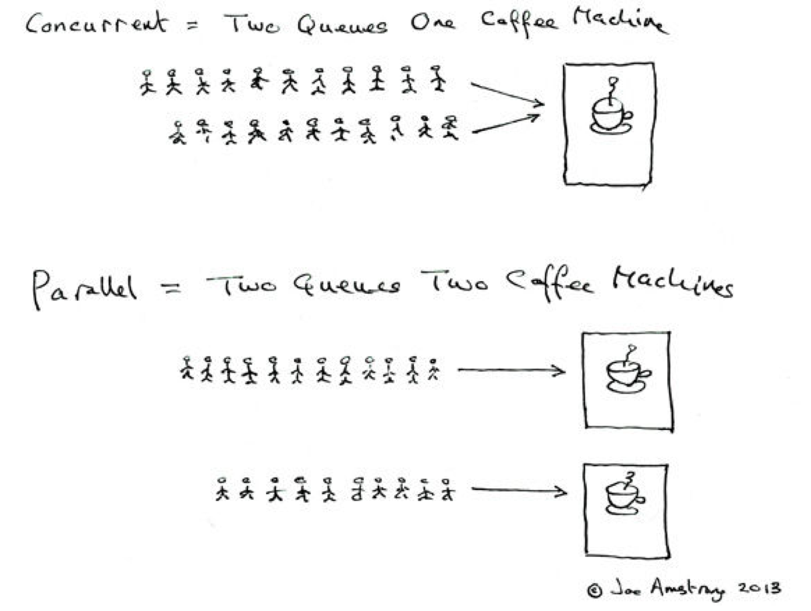

31. 迭代器 Iterator 是什么？
Iterator 接口提供遍历任何 Collection 的接口。我们可以从一个 Collection 中使用迭代器方法来获取迭代器实例。迭代器取代了 Java 集合框架中的 Enumeration，迭代器允许调用者在迭代过程中移除元素。
32. Iterator 怎么使用？有什么特点？
Iterator 使用代码如下：
1 | List<String> list = new ArrayList<>(); |
Iterator 的特点是更加安全，因为它可以确保，在当前遍历的集合元素被更改的时候，就会抛出 ConcurrentModificationException 异常。
33. Iterator 和 ListIterator 有什么区别？
- Iterator 可以遍历 Set 和 List 集合，而 ListIterator 只能遍历 List。
- Iterator 只能单向遍历，而 ListIterator 可以双向遍历（向前/后遍历）。
- ListIterator 从 Iterator 接口继承，然后添加了一些额外的功能，比如添加一个元素、替换一个元素、获取前面或后面元素的索引位置。
34. 怎么确保一个集合不能被修改？
可以使用 Collections. unmodifiableCollection(Collection c) 方法来创建一个只读集合，这样改变集合的任何操作都会抛出 Java. lang. UnsupportedOperationException 异常。
示例代码如下：
1 | List<String> list = new ArrayList<>(); |
多线程
35. 并行和并发有什么区别？
- 并行：多个处理器或多核处理器同时处理多个任务。
- 并发：多个任务在同一个 CPU 核上，按细分的时间片轮流(交替)执行，从逻辑上来看那些任务是同时执行。
如下图：
- 并发 = 两个队列和一台咖啡机。
- 并行 = 两个队列和两台咖啡机。
36. 线程和进程的区别？
一个程序下至少有一个进程，一个进程下至少有一个线程，一个进程下也可以有多个线程来增加程序的执行速度。
37. 守护线程是什么？
守护线程是运行在后台的一种特殊进程。它独立于控制终端并且周期性地执行某种任务或等待处理某些发生的事件。在 Java 中垃圾回收线程就是特殊的守护线程。
38. 创建线程有哪几种方式？
创建线程有三种方式：
- 继承 Thread 重写 run 方法；
- 实现 Runnable 接口；
- 实现 Callable 接口。
39. 说一下 runnable 和 callable 有什么区别？
runnable 没有返回值，callable 可以拿到有返回值，callable 可以看作是 runnable 的补充。
40. 线程有哪些状态？
线程的状态：
- NEW 尚未启动
- RUNNABLE 正在执行中
- BLOCKED 阻塞的（被同步锁或者IO锁阻塞）
- WAITING 永久等待状态
- TIMED_WAITING 等待指定的时间重新被唤醒的状态
- TERMINATED 执行完成